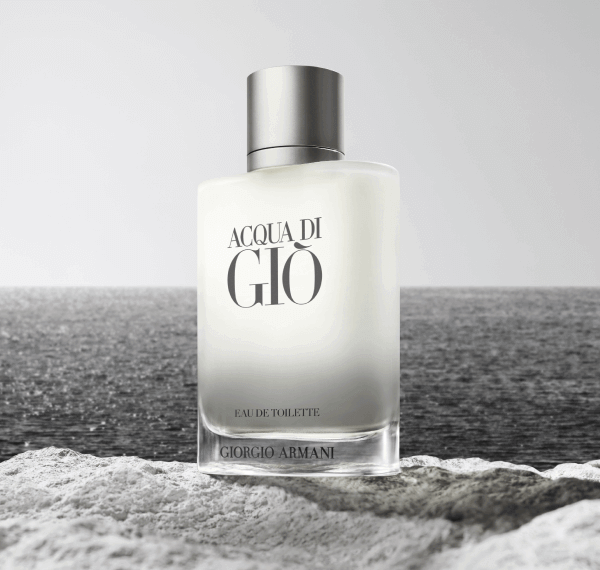

ACQUA DI GIÒ EAU DE TOILETTE to kwintesencja śródziemnomorskiego
klimatu. Zapach otwiera się nutami morskimi i bergamotką, które
tworzą jego ikoniczną świeżość. Serce zapachu to połączenie jaśminu,
cedru i rozmarynu, których aromatyczne nuty przywołują na myśl
śródziemnomorskie krajobrazy. Nuty bazy, z białym piżmem i paczulą,
podkreślają męską siłę zapachu.
Nuta bazy:
Mandarynka i bergamotka
Nuta serca:
Jaśmin, róża i rozmaryn
Nuta głowy:
Mech dębowy, Bursztyn i Piżmo

ACQUA DI GIÒ EAU DE TOILETTE to początek historii tego zapachu,
który do dziś pozostaje jego oryginalną sygnaturą. W nowym,
nowoczesnym flakonie ikona zachowuje swoje matowe szkło, znak
rozpoznawczy zapachu, które teraz przechodzi w przezroczyste szkło u
podstawy flakonu.
Ten zapach to esencja o charakterystycznej, eterycznej,
nieskazitelnej elegancji: głęboki i zmysłowy, a jednocześnie wolny
od zbędnych dodatków. W tym sensie jest on skupioną ekspresją
wartości mojej pracy: osobowości, wyszeptanej elegancji, siły i
świadomej męskości". Giorgio Armani
W ramach zaangażowania Giorgio Armaniego w lepszą przyszłość, zapach
jest wielokrotnego napełniania we wszystkich formatach dzięki
butelce uzupełniającej o pojemności 150 ml.